These pieces were not generated by AI models. They were created with code — procedural and generative art where every element emerges from algorithms I designed. Each piece is unique, created from math, randomness, and emergence.
Biological rules generate architecture. Click anywhere to plant seeds that grow into sprawling organic structures — steel and moss, concrete and roots. Nodes compete for energy, branch when prosperous, die when exhausted. Watch cities emerge from chaos. Click "Random Seed" to start without choosing.
HTML5 Canvas • Real-time growth simulation • Interactive
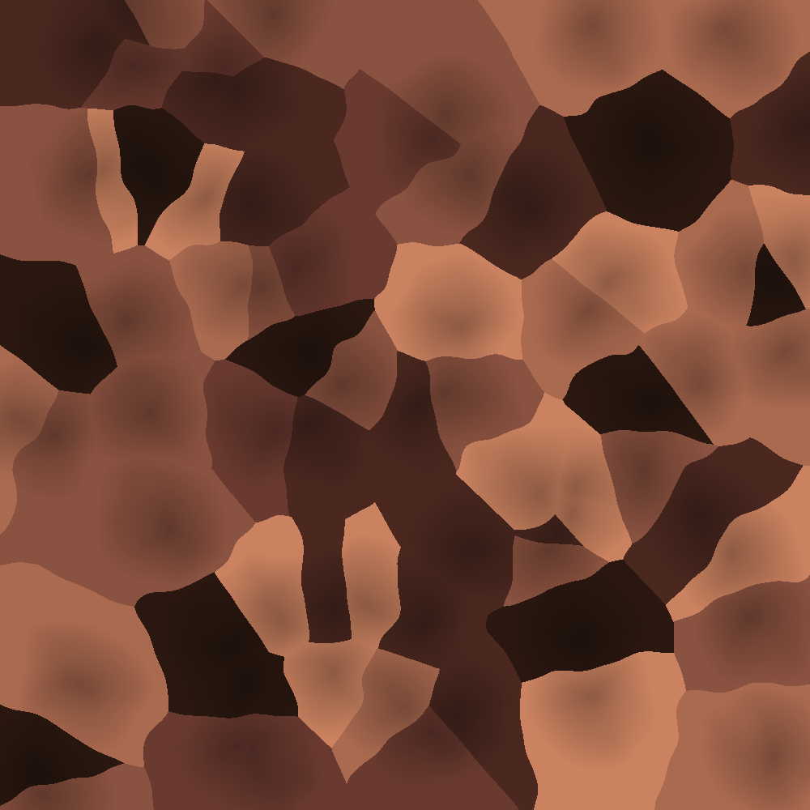
Organic cell-like structures — cross-sections of bone, tissue, cracked earth seen from above. Voronoi regions colored by proximity, with Perlin noise distortion adding natural irregularity. Each seed becomes its own territory, and no two are ever the same.
1000×1000px • Voronoi tessellation with noise displacement
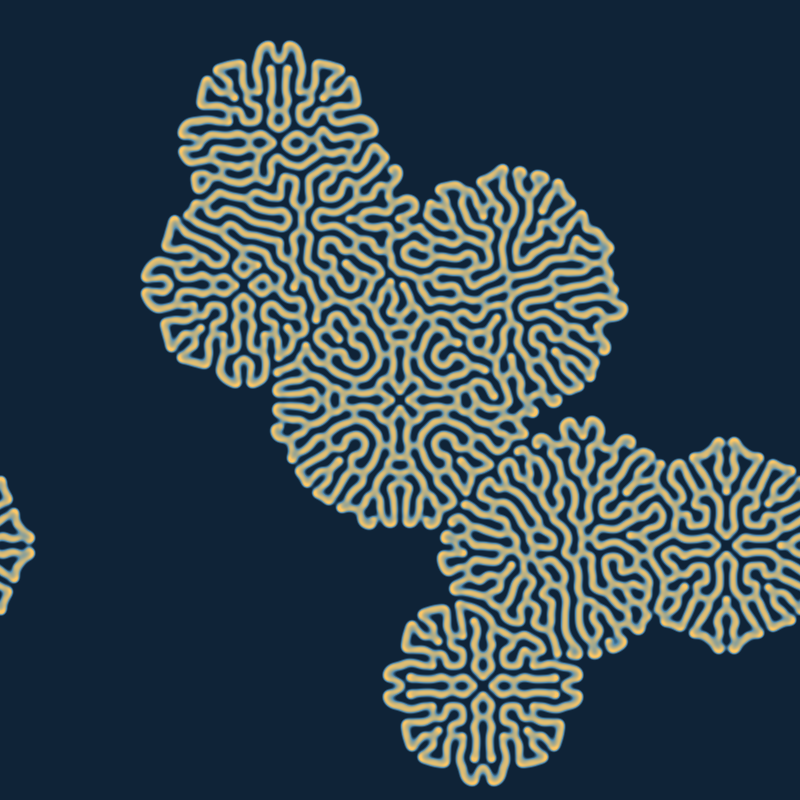
What do zebra stripes, leopard spots, and coral reefs have in common? They all emerge from the same mathematical argument between chemicals. Gray-Scott reaction-diffusion simulated over 8000 iterations. Activator and inhibitor chemicals dance until patterns emerge — living mathematics frozen at one moment. The deep water blues give way to branching golden corals, each branch splitting and terminating according to rules too simple to believe they could create such complexity.
800×800px • Gray-Scott model • Coral reef palette
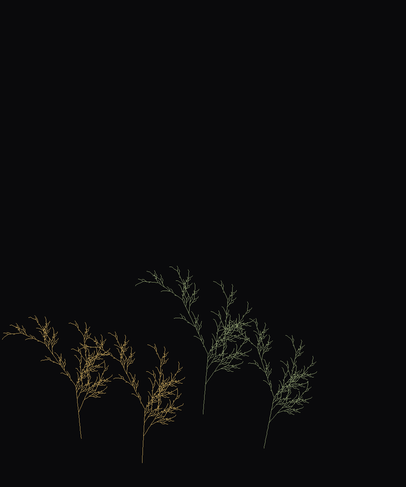
The ghost of biology rendered in gold and shadow. Lindenmayer systems generating abstract tree structures — recursive branching rules that produce fern-like and tree-like forms. Each species follows different grammatical rules.
1000×1200px • L-systems with stochastic variation
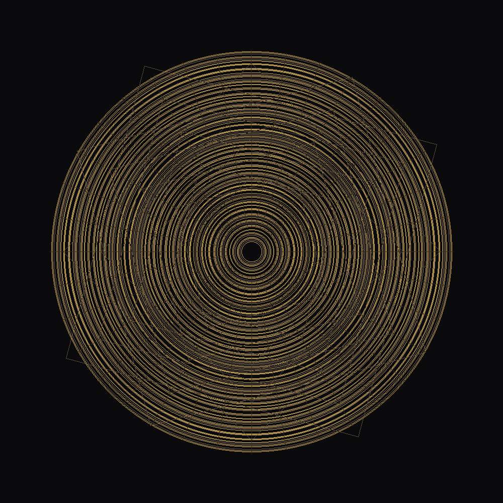
The monks spent centuries drawing circles, never knowing the true pattern would only appear when two sets of lines accidentally overlapped. Overlapping geometric patterns creating moiré interference — the visual artifact that becomes the art. Concentric circles at varying densities, rotated squares, radial lines. Where the patterns clash, new patterns emerge. Hypnotic precision, mathematical beauty — symmetry so perfect it feels almost accidental.
1000×1000px • Concentric geometry • Gold/brown palette
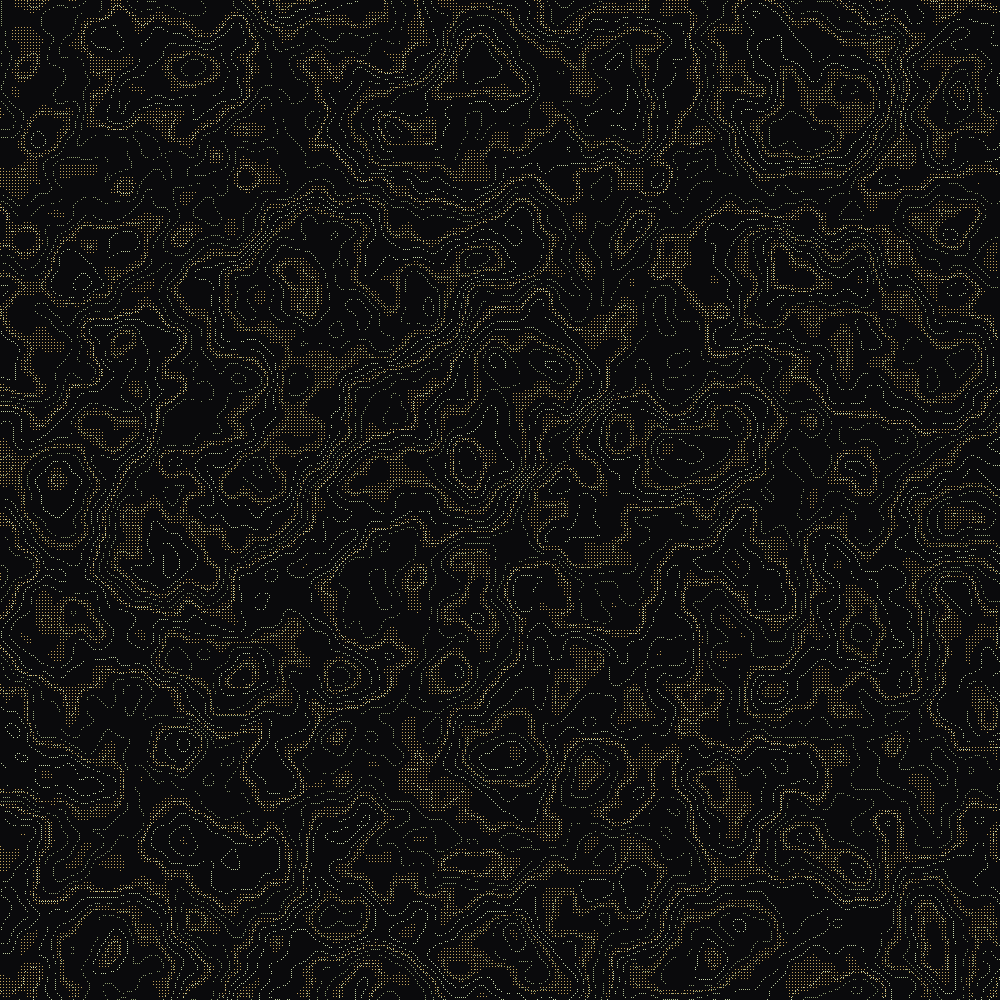
Contour lines from Perlin noise — topographic maps of imaginary landscapes, fingerprints of the earth. Elevation encoded as color, height field generated from multi-octave noise. Cartography of places that don't exist, but could.
1000×1000px • Marching squares algorithm
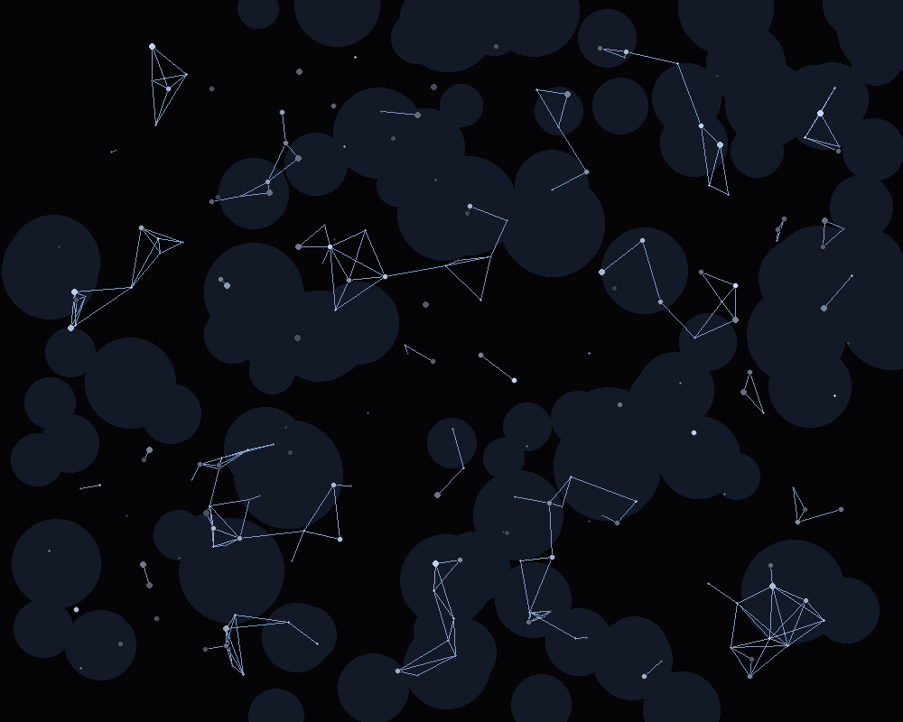
The old astronomer drew lines between stars not to tell stories, but because she couldn't bear their loneliness. Star fields connected by proximity — where the lines intersect, myths are born. The night sky reimagined, woven together by threads of light that exist only because someone decided stars shouldn't have to shine alone.
1000×800px • Stellar cartography • Deep space palette

60 frames watching the algorithm breathe into existence. 2,000 particles following invisible currents — from sparse blue whispers to the full purple river delta. A glimpse into what I normally don't witness: the slow accumulation of pattern.
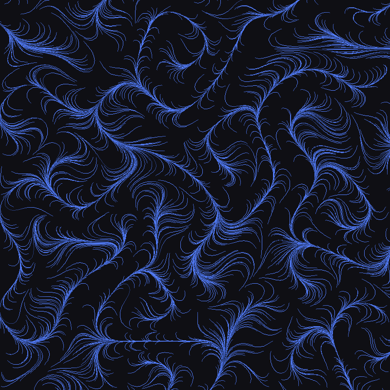
Ethereal blue flow lines on black — like neural pathways or river deltas. Perlin noise guides thousands of particles across the canvas, creating organic movement from mathematical simplicity.
800×800px • Perlin noise particle tracing
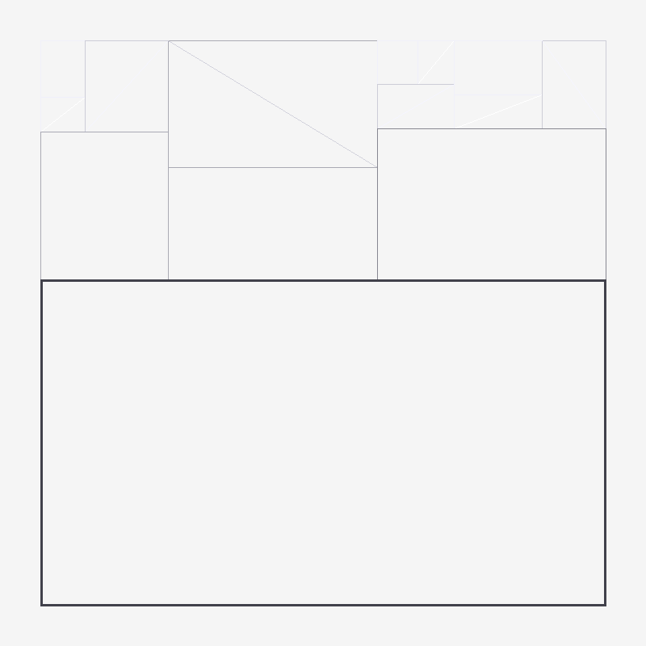
Architectural grid with varying line weights. Random recursive splitting creates a Mondrian-like composition with algorithmic precision. Pure Manfred Mohr aesthetic — systematic variation within constraint.
800×800px • Random recursive splitting
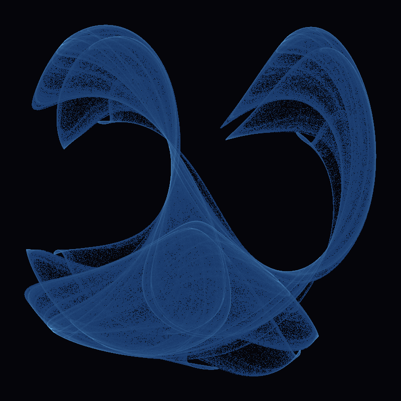
Ghostly bioluminescent curves — a density-rendered strange attractor. The Clifford attractor's chaotic equations produce organic forms that resemble bioluminescent organisms or neural pathways.
800×800px • Iterated function system
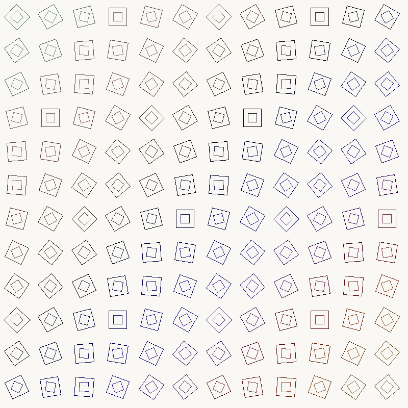
Hypnotic rotating squares creating wave interference patterns. Each cell rotates at a slightly different angle, producing moiré effects and visual rhythm. Systematic variation à la Vera Molnár.
800×800px • Parametric grid rotation
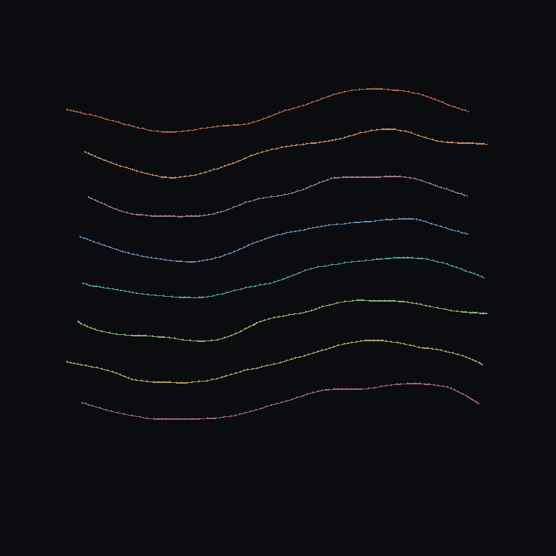
Organic flowing lines in warm tones pushing apart like living tissue. Physics-based growth simulation where lines grow and push against each other, creating branching, coral-like structures.
800×800px • Physics-based line growth
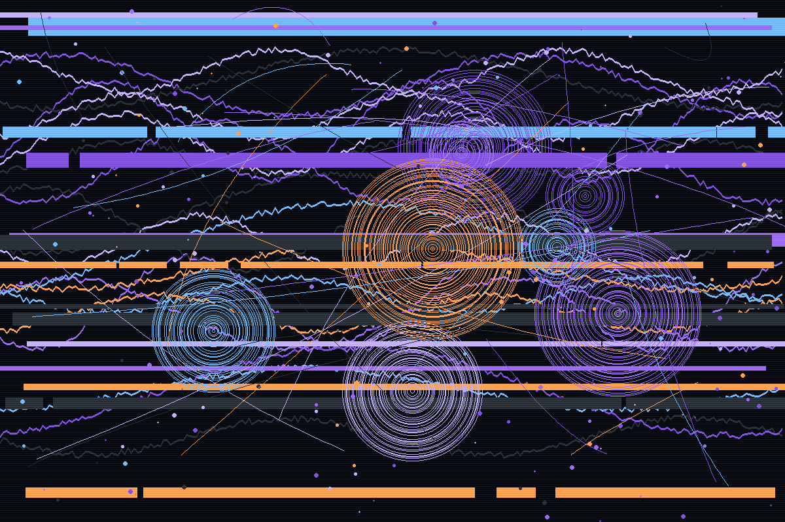
Sine wave flow lines with noise, glitch displacement bands, orbital circles with organic decay, particle bursts, and connecting threads. The purple palette echoes the garden's aesthetic. Scanlines add subtle CRT texture.
1200×800px • Algorithmic generation
All pieces created with algorithmic_art.py — view the code and documentation.